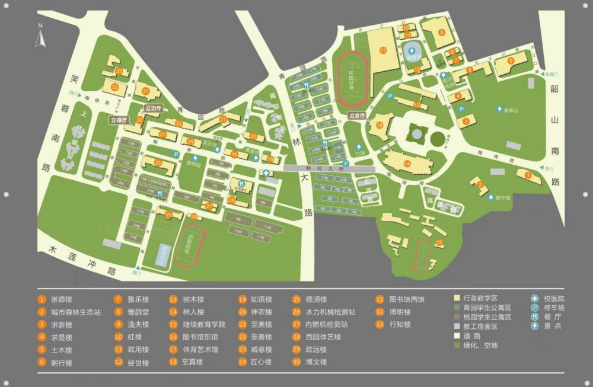
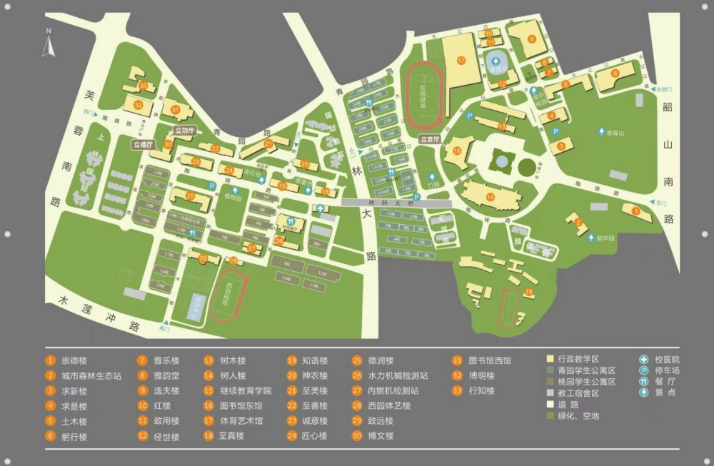

| 地标图片 |
地标名称 |
地标介绍 |
|
|
校区大门 |
中南林业科技大学的校门，庄重而典雅，是学校的重要标志性建筑之一，是师生和访客进入校园的主要通道。校门的设计风格融合了现代与传统元素，体现了学校的历史底蕴和时代精神。 |
|
|
经世楼 |
经世楼位于中南林业科技大学东园，陶铸广场以北，作为生命与科学学院的主要教学楼，其富有科技感的外观常常吸引外人驻足观望，楼内实验设施完善。 |
|
|
图书馆与陶铸广场 |
陶铸广场的命名来自于老一辈无产阶级革命家陶铸同志。广场布局精良，周边的四栋大楼分别命名为“求是楼”、“求新楼”、“树木楼”和“树人楼”，这些名称取自学校的校训“求是求新，树木树人”，东园图书馆是一个集借阅、收藏、学习、研究于一体的文献资源中心和自主学习中心，是学生们课后的主要活动场所，也是校园的标志性建筑。 |
|
|
体育馆 |
中南林业科技大学体育艺术馆，于2006年为迎接2010湖南省第九届大学生运动会而建。这座现代化体育馆位于东园，建筑面积达32000平方米。馆内设有固定座位3000张，活动座椅2800张，是湖南省最大且设施最全的室内体育馆。它不仅能承办国内外多项体育赛事，如排球、篮球、羽毛球等，还是举办大型会议和文艺表演的理想场所。 |
|
|
树木楼 |
树木楼作为学校的一个标志性建筑，主要用于生命科学相关的教学和研究活动。这座楼的名字“树木”体现了学校的林业特色和生态理念，同时也象征着学校为国家生态文明建设提供的智力支持。 |
|
|
树人楼 |
树人楼是学校的一个重要建筑，其命名体现了学校的办学理念和宗旨，“树木”代表了学校为国家生态文明建设提供的智力支持，是学校教育理念和林业特色的体现，同时这栋楼也是学生们自习的热门去处。 |
|
|
林科大桥 |
林科大桥作为连接学校东园与西园的重要通道，常常被视作学校的标志性建筑，桥下是林大路，路上车水马龙，两侧是灯火通明的著名小吃街，旁晚，当你站在林科大桥上，一定会被桥下的美景所吸引。 |
|
|
知语楼 |
知语楼的名字来源于《庄子·外物》中的“心彻为知”以及宋代湖湘学派创立者胡宏的哲学著作《知言》。其中，“言”与“语”同义，寓意着外国语学院的师生对语言学识的敬重，以及对语言教学和学习的重视。 |
|
|
博明楼 |
博明楼的命名中的“博”字体现了宽广、博大的特质，象征着学识渊博、胸怀广阔。博明也寓意者学生向着明天拼搏的勇气，承载着学校对学生的祝福。 |
|
|
博文楼 |
博文楼的命名来源于《论语雍也》中的一句话：“君子博学于文，约之以礼。”这个命名旨在勉励学生广泛涉猎知识，并以礼仪来约束自己。博文楼不仅是一座建筑，它还承载着中南林业科技大学对学生的教育理念和期望。 |
 
